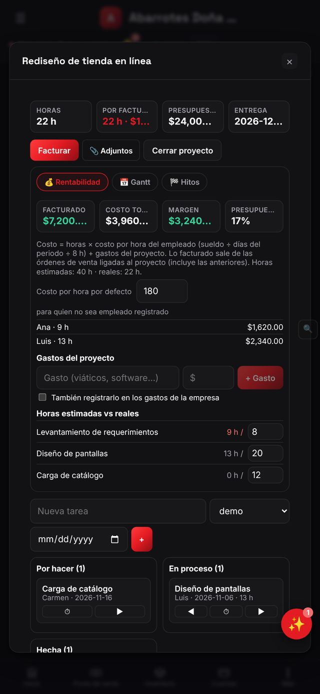
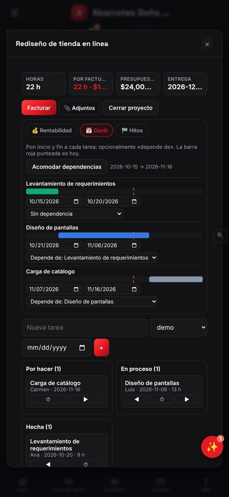
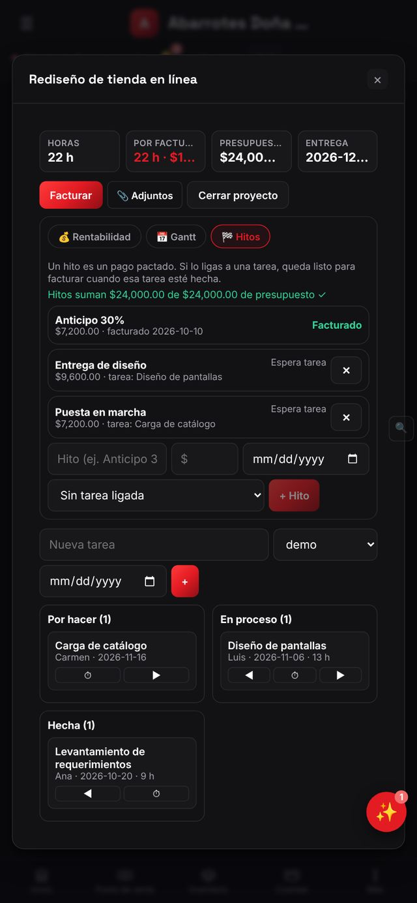

Proyectos: tareas, horas, rentabilidad, Gantt e hitos
Controla avance, presupuesto y margen de cada proyecto.
💡 Módulo suelto «Proyectos avanzados» ($79/mes).
Un proyecto reúne tareas, horas, gastos y facturación. Con los paneles avanzados ves rentabilidad, Gantt e hitos.
Abre Proyectos
Menú ☰ → Proyectos. Cada tarjeta muestra el cliente, cuántas tareas tiene, las horas trabajadas, las horas por facturar y el avance en porcentaje. Toca una tarjeta para abrir su detalle: arriba verás horas, por facturar, presupuesto y fecha de entrega.

Crea uno
Toca + Nuevo proyecto y captura el nombre, el cliente, el presupuesto, la fecha de entrega y el costo por hora por defecto (para quien no sea empleado registrado). Mientras más completo, mejor será el cálculo de rentabilidad.
Agrega tareas
Dentro del proyecto agrega tareas con responsable, horas estimadas, fecha de inicio y de vence, dependencia de otra tarea y estado. Las fechas y dependencias son las que dibujan el Gantt; las horas reales se suman al registrar tiempo.
Lee Rentabilidad
El panel 💰 Rentabilidad compara lo facturado contra el costo total y te da el margen en pesos y porcentaje, además de cuánto del presupuesto has usado. El costo es horas × costo por hora del empleado (sueldo ÷ días del periodo ÷ 8 h) más los gastos del proyecto; lo facturado sale de las órdenes de venta ligadas al proyecto. Abajo ves las horas por persona.
Gantt
El panel 📅 Gantt dibuja cada tarea como una barra en el calendario y conecta las dependencias. Si una tarea se retrasa, verás cómo empuja a las que dependen de ella. Si aún no hay tareas con fechas, te pide agregarlas.

Hitos
En 🏁 Hitos defines entregables con fecha y monto (por ejemplo «Diseño aprobado — 30%»). Cuando un hito se cumple puedes facturarlo, ideal para cobrar por avance en vez de esperar al final.

Factura
El botón Facturar convierte las horas por facturar (o los hitos cumplidos) en una orden de venta ligada al proyecto. Esa orden alimenta el campo «facturado» de Rentabilidad.
Cierra
Cuando entregues todo, toca Cerrar proyecto. Puedes adjuntar contratos o entregables con 📎 Adjuntos antes de cerrar.
Consejos
- Estima las horas de cada tarea antes de empezar: la comparación estimado vs. real te enseña a cotizar mejor.
- Registra horas a diario, no al final de la semana; el costo se calcula con lo que registres.
- Liga siempre las órdenes de venta al proyecto para que el margen sea real.
Preguntas frecuentes
¿Puedo tener proyectos sin Gantt ni rentabilidad?
Sí. El módulo Proyectos incluye tareas, horas y facturación; los paneles de rentabilidad, Gantt, hitos y las hojas de horas pertenecen a «Proyectos avanzados».
¿Cómo se calcula el costo por hora?
Con el sueldo del empleado según su periodo de pago, dividido entre días y entre 8 horas. Para quien no sea empleado usa el costo por hora por defecto del proyecto.
Sigue aprendiendo
Hojas de horas: registra y aprueba el tiempo del equipo
Semana por semana, con cronómetro.
🎯 CRM y firmaAutomatizaciones: reglas «cuando pasa esto → haz esto»
Avisos y compras automáticas.
🧮 Contabilidad y fiscalContabilidad analítica: cuánto gana cada proyecto, sucursal o línea
Etiqueta documentos con una cuenta analítica y compara resultados.
Pruébalo con tu propio negocio
Empieza gratis, sin tarjeta. Si te atoras, escríbenos a impulsorhub@gmail.com.
Abrir Ventor Google Play